МИНИСТЕРСТВО ТРАНСПОРТНОГО СТРОИТЕЛЬСТВА
ТЕХНИЧЕСКИЕ УКАЗАНИЯ
ПО ПРОЕКТИРОВАНИЮ ПОДПОРНЫХ СТЕН
ДЛЯ ТРАНСПОРТНОГО СТРОИТЕЛЬСТВА
ВСН 167-70
МИНТРАНССТРОЙ
Утверждены
Техническим управлением
Министерства транспортного строительства
Приказ № 44 от 1 июня 1970 г.
ОРГТРАНССТРОЙ
Москва 1970
Предисловие
Настоящие Технические указания содержат необходимые требования к расположению подпорных стен, материалам для их возведения, а также указания по конструированию и расчету всевозможных типов подпорных стен, возводимых на естественных основаниях для поддержания откосов насыпей и выемок железных и автомобильных дорог.
Технические указания разработаны во Всесоюзном научно-исследовательском институте транспортного строительства на основе обобщения накопленного опыта проектирования, строительства и эксплуатации подпорных стен.
Обобщение материалов и подготовка текста Технических указаний осуществлены кандидатами техн. наук К. С. Завриевым (ЦНИИС) и Г. С. Шпиро (ВЗПИ) с участием инженеров А. А. Кочарова (Кавгипротранс), К. В. Харитова, И. А. Хазана (Союздорпроект), канд. техн. наук Н. М. Глотова и инж. Н. М. Бибиной (ЦНИИС).
В Технических указаниях учтены замечания и пожелания Технического управления и Главтранспроекта Минтрансстроя, а также Научно-технического совета и ЦНИИ МПС.
Технические указания согласованы с Научно-техническим советом МПС.
Замечания по Техническим указаниям просим направлять по адресу: Москва, И-329, Игарский проезд, 2, ЦНИИС.
|
Министерство транспортного строительства |
Ведомственные строительные нормы |
ВСН 167-70 |
|
Минтрансстрой |
||
|
Технические
указания по проектированию |
Вновь |
1. ОБЩИЕ ПОЛОЖЕНИЯ
1.1. Настоящие Технические указания распространяются на проектирование подпорных стен, возводимых на естественных основаниях для поддержания откосов насыпей (низовые стены) и выемок (верховые стены) железных и автомобильных дорог. Указания не распространяются на проектирование подпорных стен специального назначения: противооползневых, противообвальных, морских и волноотбойных, речных берегоукрепительных, а также всех типов стен, сооружаемых в. районах вечной мерзлоты.
1.2. При проектировании подпорных стен для районов, подверженных землетрясениям силой более 6 баллов, помимо настоящих Технических указаний, необходимо руководствоваться главой СНиП II-A. 12-62 "Строительство в сейсмических районах. Нормы проектирования".
1.3. Подпорные стены в течение всего срока службы должны обеспечивать безопасность и бесперебойность нормального движения транспорта, а также простоту и наименьшую трудоемкость их содержания в процессе эксплуатации.
1.4. Местоположение подпорной стены и ее конструкция должны устанавливаться в проекте на основании технико-экономического сравнения вариантов.
1.5. Подпорные стены, сооружаемые в населенных пунктах, следует проектировать с учетом архитектурных особенностей этих пунктов.
1.6. Подпорные стены допускается возводить из железобетона, бетона (бутобетона), а также из камня на цементном растворе.
|
Внесены Всесоюзным научно-исследовательским институтом транспортного строительства (ЦНИИСом) |
Утверждены Техническим управлением Минтрансстроя |
Срок
введения |
1.7. Материалы, применяемые для сооружения подпорных стен, должны удовлетворять требованиям главы СНиП II -Д.7-62 "Мосты и трубы. Нормы проектирования", предъявляемым к материалам опор мостов и фундаментов труб.
2. КОНСТРУИРОВАНИЕ
2.1. Подпорные стены из железобетона рекомендуются уголкового типа (без контрфорсов, а при высоте свыше 3 - 4 м и с контрфорсами); при соответствующем обосновании могут также применяться ряжевые и другие железобетонные подпорные стены. Из бетона и камня рекомендуется возводить массивные подпорные стены, а также стены одевающего типа.
Конструкции подпорных стен могут выполняться монолитными, сборными и сборно-монолитными.
2.2. Верховые подпорные стены должны располагаться за водоотводным кюветом. В целях уменьшения объема работ допускается устраивать у кюветных лотков вертикальные стены; ширина кювета у дна должна быть не менее 0,4 м.
2.3. В выемках на прямых участках расстояние от оси ближайшего железнодорожного пути до подпорной стены на уровне подошв шпал и выше должно быть не менее: на линиях I и II категорий - 3,7 м в каждую сторону; на линиях III и IV категорий - 3,7 м в одну сторону и 3 м - в другую. В полувыемках это расстояние следует принимать: на линиях I и II категорий - 3,7 м; на линиях III и IV категорий - 3 м.
На кривых участках минимальное расстояние от оси ближайшего железнодорожного пути до подпорной стены, расположенной в выемке или полувыемке с внешней стороны кривой, необходимо увеличивать согласно табл. 1.
Таблица 1
|
Линии I и II категорий |
Линии III и IV категорий |
||
|
Радиусы кривых, м |
Увеличение расстояния, м |
Радиусы кривых, м |
Увеличение расстояния, м |
|
4000-3000 |
0,1 |
4000-2000 |
- |
|
2500-1800 |
0,2 |
1800-1200 |
0,1 |
|
1500-700 |
0,4 |
1000-700 |
0,2 |
|
600 и менее |
0,5 |
600 и менее |
0,3 |
2.4. В насыпях на прямых участках минимальное расстояние от оси ближайшего железнодорожного пути до верха наружной грани (к которой крепятся перила - см. п. 2.20) подпорной стены следует принимать согласно табл. 2.
Таблица 2
|
Категория линий |
Расстояние от оси ближайшего железнодорожного пути до верхней наружной грани низовой подпорной стены, м, при виде грунта земляного полотна |
|
|
Все грунты, за исключением перечисленных в следующей графе |
Грунты скальные, крупнообломочные и песчаные (кроме мелких и пылеватых песков) |
|
|
I и II |
3,5 |
3,0 |
|
III |
2,9 |
2,6 |
|
IV |
2,75 |
2,5 |
На кривых участках пути эти расстояния необходимо увеличить: для подпорной стены, расположенной с внешней стороны кривой, согласно табл. 1, а для подпорной стены, расположенной с внутренней стороны кривой, на величину А, определяемую по формуле
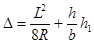
где
L = 17 м - наибольшее расстояние между шкворневыми балками у обращающихся вагонов;
R - радиус кривой;
h - возвышение наружного рельса;
b =1,524 м -ширина колеи;
h1 = l,l м -высота перил.
2.5. Толщина подпорной стены и ее отдельных элементов должна быть не менее:
|
для каменной кладки и бутобетонной |
0,6 м |
|
для бетонной кладки |
0,4 м |
|
для железобетона |
0,1 м |
2.6. Расположение подпорной стены на автомобильной дороге должно удовлетворять требованиям главы СНиП II-Д.5-62 "Автомобильные дороги общей сети Союза ССР. Нормы проектирования".
2.7. Подпорные стены необходимо разделять сквозными вертикальными швами (на всю высоту стены, включая фундамент) на секции длиной от 6 до 20 м. Швы следует располагать так, чтобы подошва каждой секции опиралась на однородный грунт.
Стены на автомобильных дорогах допускается делить на секции длиной менее 6 м, при условии специального обоснования приведения давлений от каждого ряда колес автотранспорта (на призме обрушения) к нагрузке, распределенной на сплошной полосе (см. п. 4.5).
2.8. В продольном направлении подошву подпорной стены следует располагать на горизонтальной площадке или на уклоне до 0,02. При уклоне местности свыше 0,02 необходимо стену устраивать со ступенчатой подошвой.
2.9. Глубина заложения подошвы фундамента подпорной стены при непучинистых нескальных грунтах в основании должна быть не менее 1 м, а при прочих грунтах должна, кроме того, не менее чем на 0,25 м превышать расчетную глубину промерзания грунта. При опирании на скальные грунты глубина заложения подошвы фундамента должна быть не менее 0,25 м.
Глубина заложения подошвы фундамента определяется для верховой подпорной стены от дна кювета, а для низовой от поверхности грунта (по нормали к ней).
Допускается при грунтах в основании, подверженных пучению, проектировать фундамент такой же глубины, как и в случае непучинистых нескальных грунтов при условии, что под подошвой фундамента до глубины, на 0,25 м превышающей глубину промерзания, устроена специальная подушка из утрамбованного песка или щебня.
К подверженным пучению грунтам относятся суглинки, супеси, пылеватые и мелкие пески, а также крупнообломочные грунты, содержащие частицы размером 0,1 мм в количестве 30% по весу и более.
2.10. При проектировании конструкций железобетонных и бетонных подпорных стен следует выполнять требования "Указаний по проектированию железобетонных и бетонных конструкций железнодорожных, автодорожных и городских мостов и труб" (СП 365-67), предъявляемые к железобетонным и бетонным конструкциям мостов.
2.11. Для облицовки подпорной стены из природного камня допускается применять камни той же марки, что и для кладки, при условии удовлетворения требованиям морозостойкости, но с подбором лучших камней, приколом их и более тщательной разделкой швов.
2.12. Камни кладки подпорных стен должны иметь по возможности правильную форму. Перевязка швов должна быть не менее 10 см, а для угловых камней - не менее 15 см.
2.13. Для повышения устойчивости стены против опрокидывания в ее конструкции со стороны засыпки предусматривают консольный выступ (разгрузочную консоль); для повышения устойчивости против скольжения устраивают также шпору в подошве стены или этой подошве придают уклон, при котором ее скольжению по грунту сопротивляется сила веса стены.
2.14. Обратную засыпку за подпорными стенами рекомендуется производить крупнообломочными грунтами, а также песками: гравелистыми, крупными или средней крупности.
2.15. Поверхности подпорных стен, соприкасающиеся с грунтом (кроме подошвы фундамента), следует покрывать гидроизоляцией, например, горячим битумом (за 2 раза). Для обеспечения учитываемых в расчете сил трения между грунтом и этими поверхностями их следует делать неровными. При бетонных и железобетонных стенах этого можно достичь, смещая горизонтально расположенные соседние доски опалубки относительно друг друга на 0,5 – 1,0 см.
2.16. За подпорной стеной на высоте не менее 0,5 м над дном кювета (для верховых стен) или поверхностью грунта (для низовых стен) следует устраивать продольный дренаж (с уклоном не менее 0,04) из камня, щебня или гравия. В основании дренажа должна быть дана подготовка из слоя жирной глины или уложены сборные железобетонные желоба. В теле подпорной стены не реже чем через 2 м необходимо предусмотреть окна или трубки для выпуска воды из дренажа.
При подпорных стенах ряжевой сквозной конструкции продольный дренаж не устраивается.
2.17. На выступах стен и разгрузочных консолях следует устраивать сливы. Сливы, расположенные со стороны грунта, покрывают слоем камня и крупного песка.
2.18. В подпорных стенах, возводимых в выемках железнодорожного пути, через 300 м с каждой стороны устраивают камеры шириной 6 м, глубиной 2,5 м и высотой 2,8 м, располагаемые в шахматном порядке. В промежутках между камерами через каждые 50 м предусматривают ниши шириной 3 м, глубиной 1 м и высотой 2 м.
2.19. При проектировании подпорных стен для электрифицируемых участков железных дорог следует предусмотреть возможность установки опор контактной сети (например, путем устройства в конструкциях подпорных стен специальных ниш, консолей или уширений).
2.20. На низовых железнодорожных подпорных стенах, имеющих длину более 25 м или (независимо от длины) возводимых в пределах станций, необходимо предусмотреть перила по типу перил на мостах. При длине таких стен более 50 м, кроме того, через каждые 50 м следует устраивать площадки-убежища. Площадки-убежища у стен, находящихся по обеим сторонам пути, следует располагать в шахматном порядке.
2.21. На низовых автодорожных подпорных стенах при горизонтальной поверхности засыпки следует предусмотреть ограждение барьерного типа (из железобетонных брусьев, в виде парапета и т. п.).
2.22. Для удобства осмотра и эксплуатационного обслуживания у подпорных стен высотой 3 м и более необходимо устраивать сходы по концам стен и в промежутке через каждые 100 м. Вместо сходов можно устанавливать металлические лестницы или скобы, заделанные в стену. Сходы, лестницы и скобы должны отстоять от оси ближайшего железнодорожного пути не менее чем на 3 м, а на автомобильных дорогах - находиться за обочиной.
3. ОСНОВНЫЕ ПОЛОЖЕНИЯ РАСЧЕТА
3.1. Подпорные стены рассчитывают по трем предельным состояниям.
По первому предельному состоянию выполняют расчеты:
а) устойчивости стены против опрокидывания и скольжения;
б) прочности стены (по материалу);
в) прочности основания под подошвой фундамента стены. По второму предельному состоянию проверяют положение равнодействующей внутренних сил в сечении по подошве фундамента.
По третьему предельному состоянию проверяют положение равнодействующей внутренних сил в поперечных сечениях каменных и бетонных стен и рассчитывают на трещиностойкость железобетонные стены.
3.2. Расчет подпорной стены выполняют как плоской системы. При расчете рассматривают участок стены длиной 1 м. Нагрузки, действующие на стену и на поверхность грунта за стеной, приводят к рассматриваемому участку стены.
3.3. При засыпке
котлована (со стороны передней грани фундамента подпорной стены) слоями
толщиной 0,2-0,3 м и их трамбовании разрешается учитывать пассивный
отпор грунта в размере 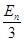 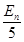
3.4. Расчет устойчивости всей стены против опрокидывания производят по формуле
|
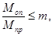 |
(1) |
где
Моп - момент опрокидывающих сил относительно оси, проходящей через переднее нижнее ребро подошвы фундамента стены (точки 0 на рис. 1);
Мпр - предельный момент, равный моменту удерживающих сил относительно той же оси;
m - коэффициент условий работы.
К опрокидывающим силам следует относить силы активного давления грунта на заднюю поверхность стены, а к удерживающим - все остальные силы.
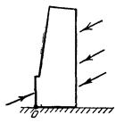
Рис. 1
При определении Моп момент опрокидывающей силы или ее составляющей, не совпадающий с направлением опрокидывания, учитывают со знаком минус; аналогично учитывают при определении Мпр момент удерживающей силы или ее составляющей, совпадающий с направлением опрокидывания.
Коэффициент условий работы m в формуле (1) принимают равным 0,7 при нескальном грунте в основании стены и 0,8 при скальном.
3.5. Расчет устойчивости всей стены против скольжения производят по формуле
|
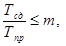 |
(2) |
где
Тсд - проекция сдвигающих сил на плоскость скольжения;
Тпр - предельная сдвигающая сила, равная проекции удерживающих сил на ту же плоскость;
m - коэффициент условий работы.
К сдвигающим силам следует относить силы активного давления грунта на заднюю поверхность стены и вызванные ими по плоскости скольжения силы трения, а к удерживающим - все остальные силы. При определении Тсд проекцию сдвигающей силы или ее составляющей, направленную против скольжения, учитывают со знаком минус; аналогично учитывают при определении Тпр проекцию удерживающей силы или ее составляющей, направленную в сторону скольжения.
Коэффициент условий работы m принимают равным 0,9 в случаях расчета верховых подпорных стен на автодорогах и равным 0,8 в остальных случаях.
Расчет устойчивости стен против
скольжения производят при значениях коэффициентов трения кладки о грунт,
приведенных в п. 692 "Технических
условий проектирования железнодорожных, автодорожных и городских мостов и
труб" (СН 200-62). Коэффициент трения грунта о грунт (при расчете
устойчивости стен против скольжения) принимают равным tg , где
, где  - расчетный
угол внутреннего трения грунта.
- расчетный
угол внутреннего трения грунта.
Расчет устойчивости стен против скольжения производят в предположении, что скольжение происходит по плоскостям, показанным стрелками на рис. 2. При этом пассивный отпор учитывают до глубины расположения линии пересечения передней грани фундамента стены с предполагаемой плоскостью скольжения (точки 0 на рис. 2).
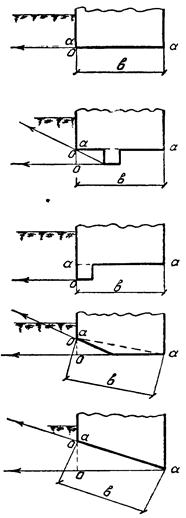
3.6. Стены, расположенные на крутых косогорах, а также все стены высотой более 7 м следует рассчитывать на устойчивость против скольжения (совместно с грунтом) по круглоцилиндрической поверхности. В случае расположения под несущим слоем грунта пласта глины или прослойки водонасыщенного песка, подстилаемого глиной, такой расчет необходимо выполнять и для стен высотой от 3 до 7 м. Очертание круглоцилиндрической поверхности следует принимать таким, чтобы эта поверхность касалась подошвы фундамента (рис. 3) или проходила ниже ее. Такой расчет производят в следующем порядке.
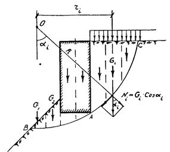
При произвольной круговой линии скольжения (линии пересечения круглоцилиндрической поверхности скольжения с расчетной плоскостью) радиуса R с центром в точке О определяют отношение момента сдвигающих сил Мсд к предельному моменту Мпр - Эти моменты вычисляют относительно точки О по формулам:
|
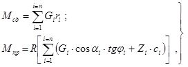 |
где
G-сила, равная сумме веса i-й части сползающего массива, заключенной между вертикальными плоскостями, и равнодействующей расположенной на ней нагрузки (см. рис. 3); для тех частей сползающего массива, в пределах которых расположена подпорная стена, сила G определяется с учетом ее веса;
r - плечо силы G относительно точки О; момент G, r положителен, когда его направление совпадает с направлением скольжения;
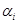
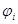
L - длина отрезка круговой линии скольжения в пределах i-го участка;
п - число участков, на
которое сползающий массив разбит вертикальными плоскостями (рекомендуется
принимать n 6).
6).
По формулам (3)
определяют значения Мсд и Мпр для
нескольких круговых линий скольжения, различающихся положениями точки О
и значениями радиуса R. Наибольшее из отношении 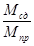
|
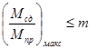 |
(4) |
где
коэффициент условий работы т равен 0,7.
3.7. Расчет прочности (по материалу) железобетонных и бетонных стен производят в соответствии с СН 365-67, а каменных - в соответствии с разделом VI СН 200-62. При этом рекомендуемое п. 1.13 СН 365-67 и п. 47 СН 200-62 понижение расчетных сопротивлений (в случаях действия лишь постоянной нагрузки) не осуществляют.
3.8. Расчет прочности грунтового основания под стеной производят по формулам:
|
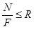 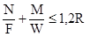 |
(5) |
или
|
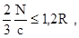 |
(6) |
где
R - расчетное сопротивление грунта осевому сжатию, определяемое по п. 682 СН 200-62;
N и М - продольная сила и изгибающий момент в сечении а-а по подошве (фактической или условной) фундамента, которую устанавливают согласно рис. 2;
F и W- площадь и момент сопротивления подошвы фундамента;
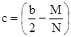
b-ширина подошвы фундамента.
Формулы (5) используют при 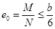 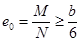
В тех случаях, когда в сечении по подошве фундамента момент пассивного отпора грунта получается больше момента активного давления, распределение напряжений в этом сечении принимают равномерным.
3.9. В сечении по
подошве (фактической или условной) фундамента подпорной стены отношение 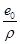
а) для низовых стен, сооружаемых на железных дорогах,
|
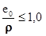 |
(7) |
б) для остальных стен
|
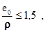 |
(8) |
где
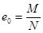
р - радиус ядра этого сечения.
3.10. Для
поперечных сечений бетонных и каменных стен отношение 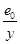
3.11. Расчетный
угол 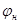 внутреннего
трения грунта принимают равным нормативному углу
внутреннего
трения грунта принимают равным нормативному углу
3.12. Расчетный
угол  трения
грунта о боковую поверхность подпорной стены принимают:
трения
грунта о боковую поверхность подпорной стены принимают:
а) для стен, сооружаемых на автодорогах,
|
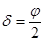 |
(9) |
б) для стен, сооружаемых на железных дорогах,
|
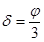 |
(10) |
3.13. Сцепление грунта учитывают только в расчете стены на устойчивость против скольжения совместно с грунтом по круглоцилиндрической поверхности.
Расчетное сцепление с грунта принимают равным 0,5c, где c - нормативное сцепление, определяемое по данным лабораторных исследований грунта.
3.14 При определении активного давления грунта на участке АВ задней грани подпорной стены, когда эта грань наклонена в сторону от насыпи, вместо участка АВ рассматривают фиктивную вертикальную грань АС (рис. 4). Вес грунта в объеме призмы АВС и нагрузку, лежащую на этой призме, учитывают как вес стены.
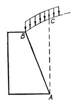
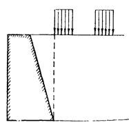
Усилия в горизонтальном или наклонно расположенном сечении стены (и по ее подошве) определяют по эпюре давления грунта (на участке стены от этого сечения до поверхности грунта), построенной при плоскости обрушения, проходящей через нижнюю точку этого участка.
3.15. Подвижную нагрузку автомобильных дорог располагают непосредственно за задней гранью (фактической или фиктивной) стены, вплотную к этой грани (рис. 5).
4. НАГРУЗКИ И ИХ КОЭФФИЦИЕНТЫ
4.1. Величины нормативных нагрузок от веса проезжей части и собственного веса стены определяют по объемным весам материалов, приведенным в СН 200-62. Объемный вес грунта следует принимать по данным лабораторных исследований грунтов.
4.2. Коэффициенты перегрузки п при определении нагрузок от веса проезжей части и собственного веса стены принимают равным 1,1 или 0,9, а от веса грунта - 1,2 или 0,9. Из двух указанных значений п в каждом случае принимают то, при котором получается более опасная комбинация действующих сил.
К весу грунта, расположенного за фактической или фиктивной гранью стены, вводится один коэффициент перегрузки.
4.3. Нормативные временные вертикальные нагрузки (с учетом перспективы) на призме обрушения принимают:
а) от подвижного состава железных дорог - в виде нагрузки С14;
б) от колонны автомобилей - в виде нагрузки Н-30 и от других транспортных единиц автомобильных и городских дорог - в виде колесной нагрузки НК-80.
4.4. При расположении подпорной стены вдоль железнодорожного пути нагрузку на расчетной схеме принимают в виде сплошной полосы.
На уровне подошвы балластной призмы принимают:
ширину а полосы, м,
|
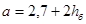 |
(11) |
интенсивность q нормативной нагрузки, т/м,
|
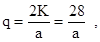 |
(12) |
где h-толщина балластного слоя под подошвой шпалы, равная 0,75 м,
К = 14 - класс нагрузки.
4.5. При расположении подпорной стены вдоль движения автотранспорта давления от каждого ряда колес приводят к нагрузке, равномерно распределенной на сплошной полосе шириной а, равной 0,6 м в случае автомобильной нагрузки Н-30 и 0,8 м в случае колесной нагрузки НК-80.
Интенсивность q нормативной нагрузки в пределах каждой полосы устанавливают в зависимости от величины
|
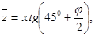 |
где х - расстояние между задней гранью (фактической или фиктивной) стены и осью полосы.
Значение q, т/м, при нагрузке Н-30 устанавливают по табл. 3, а при нагрузке НК-80 вычисляют по формуле
|
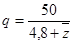 |
в которую следует подставлять значения , м.
|
, м |
q, т/м |
, м |
q, т/м |
, м |
q, т/м |
|
0 |
8,3 |
5,5 |
2,5 |
11,0 |
1,7 |
|
0,5 |
6,1 |
6,0 |
2,4 |
11,5 |
1,7 |
|
1,0 |
5,3 |
6,5 |
2,3 |
12,0 |
1,6 |
|
1,5 |
4,7 |
7,0 |
2,2 |
12,5 |
1,6 |
|
2,0 |
4,2 |
7,5 |
2,1 |
13,0 |
1,5 |
|
2,5 |
3,8 |
8,0 |
2,0 |
13,5 |
1,5 |
|
3,0 |
3,5 |
8,5 |
1,9 |
14,0 |
1,5 |
|
3,5 |
3,2 |
9,0 |
1,9 |
14,5 |
1,4 |
|
4,0 |
2,9 |
9,5 |
1,8 |
|
|
|
4,5 |
2,7 |
10,0 |
1,8 |
|
|
|
5.0 |
2,6 |
10,5 |
1,7 |
|
|
4.6. Коэффициенты перегрузки для подвижных временных нагрузок, приведенных в пп. 4.3 - 4.5, принимают:
а) от железнодорожного состава п = 1,3;
б) от колонн автомобилей п = 1,4;
в) от транспортных единиц автомобильных и городских дорог п = 1,1.
4.7. Горизонтальную поперечную нагрузку от центробежной силы, возникающую на криволинейных участках пути, в расчете подпорных стен не учитывают.
4.8. Динамический коэффициент для временной нагрузки принимают равным единице.
5. ОПРЕДЕЛЕНИЕ АКТИВНОГО И ПАССИВНОГО ДАВЛЕНИЯ ГРУНТА
5.1. В случае, когда поверхность грунта ограничена плоскостью и на ней равномерно распределена нагрузка интенсивностью q (рис. 6), силу Е активного давления грунта на
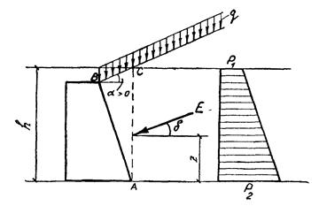
вертикальный участок грани (фактической или фиктивной) стены от поверхности грунта до глубины h вычисляют по формуле
|
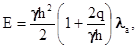 |
(15) |
где 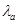
|
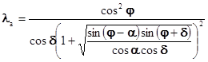 |
(16) |
где  - угол между плоскостью,
ограничивающей поверхность грунта, и горизонтальной плоскостью;
правило знаков для угла
- угол между плоскостью,
ограничивающей поверхность грунта, и горизонтальной плоскостью;
правило знаков для угла  показано на рис. 6.
показано на рис. 6.
Значения 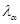
Сила Е наклонена к
горизонту под углом  и является равнодействующей давлений,
распределенных по линейному закону (см. рис. 6) с ординатой
в верхней точке рассматриваемого участка грани стены
и является равнодействующей давлений,
распределенных по линейному закону (см. рис. 6) с ординатой
в верхней точке рассматриваемого участка грани стены
|
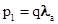 |
(17) |
и с ординатой на глубине h от этой точки
|
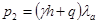 |
(18) |
Сила Е приложена от нижнего конца рассматриваемого участка грани стены на расстоянии z, равном
|
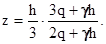 |
(19) |
При q = 0 получается:
|
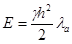 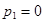 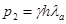 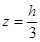 |
(20) |
|
|
а, град |
|
|
а, град |
|
||
|
|
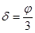 |
|
|
||||
|
|
0 |
0,446 |
0,458 |
|
0 |
0,246 |
0,251 |
|
20 |
10 |
0,532 |
0,541 |
|
10 |
0,275 |
0,280 |
|
|
20 |
0,899 |
0,889 |
35 |
20 |
0,319 |
0,325 |
|
|
0 |
0,367 |
0,377 |
|
30 |
0,423 |
0,422 |
|
25 |
10 |
0,425 |
0,435 |
|
35 |
0,704 |
0,685 |
|
|
20 |
0,548 |
0,551 |
|
|
|
|
|
|
25 |
0,841 |
0,830 |
|
0 |
0,200 |
0,202 |
|
|
0 |
0,301 |
0,308 |
40 |
10 |
0,220 |
0,222 |
|
|
10 |
0,343 |
0,350 |
|
20 |
0,251 |
0,252 |
|
30 |
20 |
0,416 |
0,420 |
|
30 |
0,304 |
0,305 |
|
|
30 |
0,776 |
0,762 |
|
40 |
0,624 |
0,603 |
5.2. В случаях, не охваченных п. 5.1, силу Е активного давления грунта на вертикальный участок грани (фактической или фиктивной) стены определяют как наибольшее из значений E, подсчитанных по формуле
|
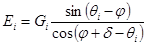 |
где G-сумма веса G предполагаемой призмы обрушения ACDi и равнодействующей расположенной на ней нагрузки (рис. 7);
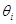
Значение , которому
соответствует наибольшее значение Е, определенное по формуле (21), принимают за угол  между плоскостью обрушения и
горизонтальной плоскостью.
между плоскостью обрушения и
горизонтальной плоскостью.
Силу Е рассматривают как
сумму силы Eот веса призмы
обрушения и сил Е от каждой из нагрузок на призме
обрушения. Силы E и Е наклонены
к горизонту под углом .
.
Силу E определяют по формуле
|
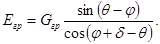 |
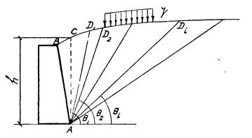
Принимают, что сила E является равнодействующей давлений, эпюра которых имеет вид треугольника. Расстояние от точки приложения этой силы до нижнего конца (точки А) рассматриваемого участка стены вычисляют по формуле
|
|
(23) |
Силу Е от нагрузки q, расположенной на призме обрушения и распределенной по ширине а (рис. 8), определяют по формуле
|
. |
Принимают, что сила Е является равнодействующей давления, равномерно распределенного между точками и , которые расположены от точки А (см. рис. 8) на расстояниях:
|
|
Расстояние от точки приложения силы Е до точки А определяют по формуле
|
|
В формулах (25) и (26) х - расстояние между задней гранью стены и осью полосы (шириной а) нагрузки, a ho- разность отметок уровня поверхности грунта под центром полосы шириной а и точкой С (см. рис. 8).
В случае автодорожной нагрузки на призме обрушения силу Е следует определять [по формуле (21)] исходя из того, что плоскость обрушения на поверхность грунта должна выходить слева или справа от полосы колесной нагрузки, не деля ее на две части.
Если часть полосы железнодорожной нагрузки оказывается за пределами призмы обрушения, под размером а следует понимать ширину той части полосы, которая расположена на призме обрушения.
5.3. Если задняя грань ВС стены имеет наклон в сторону насыпи на угол ε (рис. 9), то силу Е давления грунта на эту грань определяют по формуле
|
|
где Е - сила давления грунта на фиктивную вертикальную грань АС.
Точку приложения силы Е принимают
расположенной на уровне точки приложения силы Е, а направление силы Е - под
углом  к
нормали, проведенной к задней грани стены.
к
нормали, проведенной к задней грани стены.
При принимается Е=0.
По формуле (27) определяют также силу давления грунта на те грани стены с задней поверхностью ломаного очертания, которые имеют наклоны в сторону насыпи (грань ВС на рис. 10). В этих случаях под Е следует понимать силу давления грунта на ту часть фиктивной вертикальной грани, которая представляет собой проекцию рассматриваемой наклонной грани на вертикальную плоскость. Например, при определении силы Е давления грунта на грань ВС (см. рис. 10) величину силы Е принимают равной площади части 1-2-3-4 эпюры давления грунта на вертикальную фиктивную грань AD.
5.4. При стене, имеющей уступы со стороны насыпи, профиль задней поверхности стены упрощают.
В качестве упрощенного профиля при определении активного давления на стену, показанную на рис. 11, необходимого для расчета прочности основания, а также устойчивости положения стены, принимают ломаную прямую 11-12-13-16. При этом вес и объемов грунта, расположенных над выступами, учитывают как вес стены. Активное давление грунта на стену определяют в следующем порядке:
а) для фиктивной грани 11 - 17 стены строят эпюру 1-8-10;
б) определяют силу давления грунта на фиктивную грань 11-12, равную площади участка 1-2-3 эпюры давлений; силу прикладывают к фиктивной грани 11-12 на уровне центра тяжести участка 1-2-3 эпюры давлений;
в) силу давления грунта1 на грань 12-13 определяют в соответствии с п. 5.3. При этом силу Е принимают равной площади участка 2-3-5-4 эпюры давлений и приложенной в центре тяжести этого участка;
г) из точки 12 проводят
лучи под углами  и
и  к горизонтали. Эти лучи в точках 14
и 15 пересекают фиктивную грань 13-16.
к горизонтали. Эти лучи в точках 14
и 15 пересекают фиктивную грань 13-16.
_________________
В случае когда угол наклона грани 12-13 к
вертикали >90°
-  (как
на рис. 11), tgtg
(как
на рис. 11), tgtg >tg
(90° -
>tg
(90° -  )
tg
)
tg =1 и на основании указания п. 5.3 Еε
= 0.
=1 и на основании указания п. 5.3 Еε
= 0.
В случае определения давления по
п. 5.1 угол  устанавливают по формуле
устанавливают по формуле
|
|
(28) |
где
|
|
(29) |
В остальных случаях значение  определяется в
соответствии с п. 5.2;
определяется в
соответствии с п. 5.2;
д) из точки 4 эпюры давлений проводят прямую 4-9, параллельную прямой 1-10;
e) точки 14 и 15 горизонтальными прямыми сносят на эпюру давлений, из которой затем выделяют участок 4- 6-7-10-8;
ж) определяют силу Е давления грунта на фиктивную грань 13-16. Эту силу принимают равной площади участка 4-6-7-10-8 эпюры давлений и приложенной в уровне его центра тяжести.
При определении активного давления, необходимого для проверки прочности той же стены в сечении, расположенном ниже уступа, например в сечении 1-1 (рис. 12) в качестве упрощенного профиля задней поверхности участка стены, в пределах которого учитывают давление грунта, принимают ломаную прямую 11-12-13-16. Определение давлений, Е, и на фиктивные грани 11-12, 12-13 и 13-16 участка стены пояснено на рис. 12.
Активное давление, необходимое для проверки прочности стены в сечениях, расположенных выше уступов, определяют с учетом п. 3.14.
5.5. Силу пассивного давления грунта на вертикальный участок (фактический или фиктивный) стены (рис. 13) определяют по формуле
|
|
где  - коэффициент пассивного давления грунта,
определяемый выражением
- коэффициент пассивного давления грунта,
определяемый выражением
|
|
При определении знак угла а принимается согласно рис. 13.
Значения приведены в табл. 5.
|
|
a, град |
|
|
a, град |
|
||
|
|
|
|
|
||||
|
|
0 |
2,64 |
2,42 |
|
0 |
7,40 |
5,71 |
|
20 |
10 |
1,83 |
1,73 |
|
10 |
4,36 |
3,63 |
|
|
20 |
0,90 |
0,89 |
35 |
20 |
2,60 |
2,29 |
|
|
0 |
3,55 |
3,12 |
|
30 |
1,39 |
1,30 |
|
25 |
10 |
2,37 |
2,17 |
|
35 |
0,70 |
0,69 |
|
|
20 |
1,46 |
1,39 |
|
|
|
|
|
|
25 |
0,84 |
0,83 |
|
0 |
11,90 |
8,22 |
|
|
0 |
5,00 |
4,16 |
|
10 |
6,31 |
4,87 |
|
|
10 |
3,17 |
2,79 |
40 |
20 |
3,59 |
2,96 |
|
30 |
20 |
1,95 |
1,79 |
|
30 |
1,92 |
1,71 |
|
|
30 |
0,78 |
0,76 |
|
40 |
0,62 |
0,60 |
Сила наклонена к
горизонту под углом  (см. рис. 13) и
приложена на расстоянии z от низа грани стены,
равном
(см. рис. 13) и
приложена на расстоянии z от низа грани стены,
равном
|
|
(32) |
при q=0
|
|
Приложение
ПРИМЕР РАСЧЕТА ПОДПОРНОЙ СТЕНЫ
Требуется рассчитать бетонную подпорную стену, показанную на рис. 1, при следующих данных:
угол внутреннего трения грунта = 35°;
объемный вес грунта равен 1,8 т/м3;
расчетное сопротивление грунтового основания осевому сжатию R = 3,5 кг/см2;
коэффициент трения кладки о грунт основания = 0,4;
марка бетона стены - 150.
На призме обрушения нагрузка НК-80.
Рис. 1.
Расчет сечения по обрезу фундамента
Согласно п. 3.14 активное давление грунта устанавливаем на фиктивную вертикальную грань АС, а вес грунта в объеме призмы АВС учитываем как вес стены (рис. 2, а). В соответствии с п. 3.15 подвижную нагрузку располагаем непосредственно за фиктивной гранью АС.
По формуле (13) определяем значения , соответствующие первой и второй полосам нагрузки:
Рис. 2
м;
м.
По формуле (14) подсчитываем значения интенсивности q нормативной нагрузки для первой и второй полос:
т/м;
т/м.
Согласно п. 4.6 интенсивности расчетных нагрузок в пределах первой и второй полос составляют;
q = 1,1×9 = 9,9 т/м;
q = 1,1×4,7 = 5,2 т/м.
Определяем расчетную силу Е активного давления грунта на фиктивную грань АС высотой h=4 м. Согласно пп. 3.11 и 3.12 принимаем расчетный угол внутреннего трения грунта =35° и расчетный угол трения грунта о боковую поверхность подпорной стены 17°30'.
Коэффициент перегрузки при определении веса призмы обрушения принимаем равным 1,2 (см п. 4.2).
Задаваясь несколькими положениями
плоскости обрушения, по формуле (21) подсчитываем
соответствующие им значения E (см
верхнюю половину табл. 1) Согласно п. 5.2 и табл. 1
расчетная сила активного давления грунта E=8,75 т,
а угол между плоскостью обрушения и горизонтальной плоскостью  =78°40.
=78°40.
Силу E разбиваем на две составляющие: на силу E от веса призмы обрушения и силу Eq от нагрузки на призме обрушения. По формулам (22)-(24) и (26) определяем величины этих сил и расстояния и от точки А (см. рис 2,б) до точек приложения сил и соответственно
т;
т;
м,
м.
Силы и раскладываем на горизонтальную и вертикальную составляющие (см. рис. 2,б):
т;
т;
т;
т.
В табл. 2 приводятся вычисления нормативных и расчетных весов частей стены, расположенных выше сечения по обрезу фундамента (см. рис. 1 и 2).
Таблица 1
|
h,м |
i |
x,м |
|
|
qi-j |
j+d-qi |
sin(qi-j) |
cos(j+d-qi) |
sin(qi-j) cos(j+d-qi) |
Gгрi=1,2gxih/2, m |
q1pa или q1pa+q2pa m/м |
Gi, т |
Ei= =Gi×sin(qi-j) cos(j+d-qi) |
|
|
1 |
0,8 |
5,00 |
78°40' |
43°40' |
-26°10' |
0,691 |
0,898 |
0,770 |
3,45 |
7,9 |
11,35 |
8,75 |
|
|
2 |
1,4 |
2,85 |
70°40' |
35°40' |
-18°10' |
0,583 |
0,950 |
0,614 |
6,05 |
7,9 |
13,95 |
8,55 |
|
4,0 |
3 |
2,0 |
2,00 |
63°30' |
28°30' |
-11°00' |
0,477 |
0,982 |
0,487 |
8,64 |
7,9 |
16,54 |
8,10 |
|
|
4 |
2,7 |
1,48 |
56°00' |
21°00' |
-3°30' |
0,358 |
0,998 |
0,359 |
11,65 |
7,9 |
19,55 |
7,03 |
|
|
5 |
3,5 |
1,14 |
48°40' |
13°40' |
3°50' |
0,236 |
0,998 |
0,237 |
15,10 |
12,0 |
27,10 |
6,43 |
|
|
1 |
0,8 |
7,38 |
82°10' |
47°10' |
-29°40' |
0,733 |
0,869 |
0,845 |
5,1 |
7,9 |
13,0 |
11,00 |
|
|
2 |
1,4 |
4,20 |
76°40' |
41°40' |
-24°10' |
0,665 |
0,912 |
0,730 |
8,9 |
7,9 |
16,8 |
12,25 |
|
5,9 |
3 |
2,0 |
2,95 |
71°20' |
36°20' |
-18°50' |
0,593 |
0,947 |
0,627 |
12,7 |
7,9 |
20,6 |
12,90 |
|
|
4 |
2,7 |
2,18 |
б5°20' |
30°20' |
-12°50' |
0,505 |
0,975 |
0,518 |
17,2 |
7,9 |
25,1 |
12,95 |
|
|
5 |
3,5 |
1,68 |
59°20' |
24°20' |
- 6°50' |
0,412 |
0,993 |
0,415 |
22,3 |
12,0 |
34,3 |
14,26 |
|
|
6 |
4,5 |
1,31 |
52°40' |
17°40' |
- 0°10' |
0,304 |
1,000 |
0,304 |
28,6 |
12,0 |
40,6 |
12,35 |